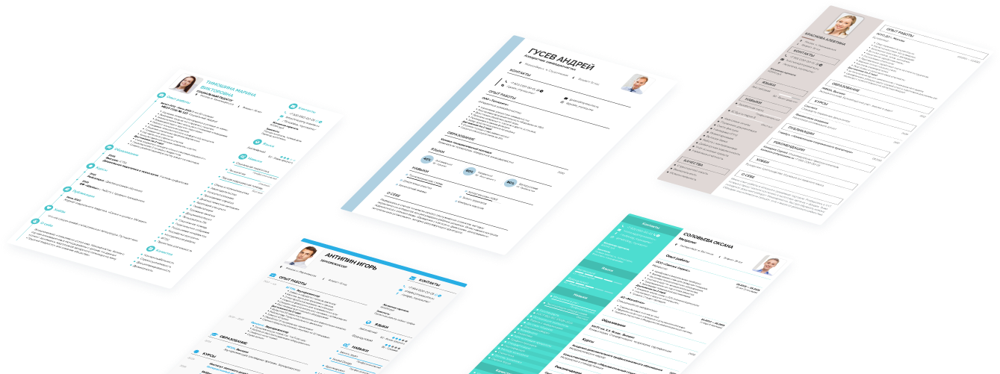
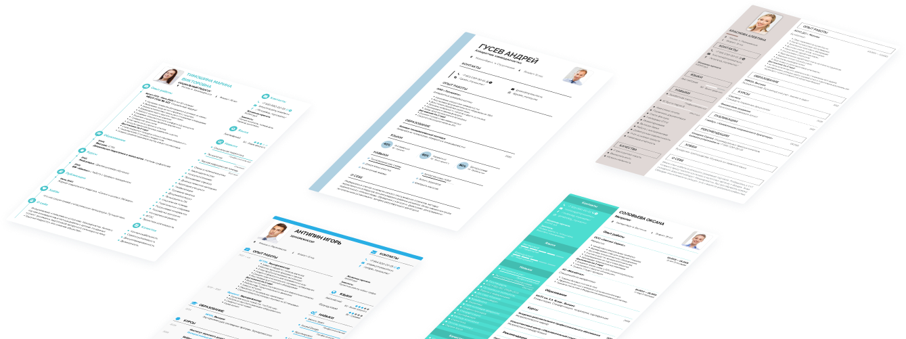

По статистике, 75% кандидатов после отправки отклика на вакансию не получают обратной связи от работодателя. В большинстве случаев виной тому не отсутствие опыта, образования или специальных навыков, а неправильно составленное безликое резюме.
Чтобы не оказаться в числе отвергнутых соискателей, нужно основательно подготовить анкету для трудоустройства. Не знаете с чего начать? Готовые примеры резюме на работу — быстрое и эффективное решение вашей проблемы!
Как выглядит идеальный образец резюме
Есть ли какие-то маркеры «правильности» примеров резюме? Безусловно. В интернете можно встретить разные варианты заполненных шаблонов. Но, согласитесь, наспех внесенные кем-то сведения в бланке из ворда выглядят малопривлекательно?
 Внимание!
Внимание!
Другое дело, когда пример резюме на работу выглядит профессионально: красивый дизайн, графические элементы, четкая структура, визуальное разделение на блоки, грамотные смысловые и цветовые акценты. С таким документом даже выпускник школы сможет успешно получить должность.
10 отличий примеров правильного резюме от неграмотных образцов
| Хороший пример | Плохой пример |
|---|---|
|
1. Структурированность.
2. Элементы инфографики.
3. Оригинальный шаблон.
4. Наличие обязанностей и достижений.
5. Есть фото, резюме персональное.
6. Навыки соотносятся с профессией.
7. Основные и дополнительные блоки.
8. «Шапка» резюме оформлена.
9. Градация уровней владения навыками.
10. Деление на блоки.
|
1. «Полотно» текста.
2. Только набор слов.
3. Стандартный дизайн.
4. Копирование должностной инструкции.
5. Нет фото, документ безликий.
6. Случайный набор компетенций.
7. Только основные разделы.
8. «Шапка» анкеты теряется в тексте.
9. Простое перечисление навыков.
10. Отсутствие заголовков.
|
И последнее, универсальность. Идеальный образец должен подходить для мужчин и женщин в равной степени.
Мы убедили вас, что для резюме примеры готовые должны подбираться с особой тщательностью? Теперь расскажем, как изменить найденный документ под требования конкретного работодателя с учетом вашей трудовой биографии.
Как адаптировать пример резюме «под себя»
Найти удачный образец резюме – 50% успеха. Другая половина будет зависеть от того, как вы отредактируете документ.
Помните, как относились преподаватели к любителям списывать — в фаворитах такие ученики точно не были. Уверяем, рекрутеры на скопированную анкету тоже не отреагируют положительно.
Начнем с того, какой вид резюме подходит именно вам. Напомним три основных:
- Хронологическое, где главный акцент делается на опыте работы.
- Функциональное — приоритет отдается профессиональным навыкам.
- Комбинированное — синергия двух выше названных типов.
Есть еще академическое CV, анкета для прохождения военной службы, резюме для поступления в вуз и приема на стажировку. Короткое и подробное. Обычное и креативное. Так вот, идеальный образец для устройства на работу должен с легкостью адаптироваться под любые запросы соискателя.
Хорошо, а что делать, если вы решили устраиваться в иностранную компанию? Искать примеры на зарубежных сайтах? Не волнуйтесь, это не потребуется. В нашем конструкторе перевод названий разделов с русского на английский язык происходит автоматически одним кликом мыши.
Что делать после редактирования образца
Составление резюме подошло к концу. Вам удалось создать классный документ, который отвечает всем правилам делопроизводства. Теперь нужно отправить его работодателю. Мы предлагаем несколько вариантов, как это сделать.
Вариант №1. Скачать и отправить резюме в формате pdf.
Те, кто заполняет документ в программах вроде word, по классической схеме сохраняют файл в формате doc. Эта ошибка может стоить работы. Только pdf гарантирует сохранность структуры резюме и корректное открытие его на любом устройстве.
Вариант №2. Скачать и распечатать файл.
Сохраните документ в формате пдф на компьютере, планшете или смартфоне, а затем отправьте его на печать. Во время телефонного интервью желательно, чтобы бланк был у вас перед глазами — эйчары обычно задают уточняющие вопросы по резюме.
Вариант №3. Поделиться прямой ссылкой на резюме.
Современный подход к отправке документа. Многие компании настраивают фильтры на входящие сообщения, поэтому есть риск, что ваше резюме может попасть в папку «Спам». Чтобы такого не произошло, в окне редактора настройте видимость документа, скопируйте ссылку на web-страницу с заполненным резюме, отправьте ее работодателю по электронной почте, поделитесь в соцсетях или мессенджерах.
Кроме ссылки, рекрутер увидит краткую информацию о соискателе, а значит, наверняка не сочтет содержимое за вредоносное ПО. Кстати, этот вариант отправки для наших пользователей абсолютно бесплатный!
Чем еще могут помочь примеры оформления резюме
Человеку, который ни разу не заполнял анкету, например, подростку или студенту без опыта, непонятно, с чего начать, как должны выглядеть блоки, какую информацию можно включить, а о чем лучше умолчать. Для этого и существуют образцы. С примерами резюме для устройства на работу время на заполнение анкеты сокращается в 5 раз
Резюме — деловой документ. Его можно написать в свободной форме, но придерживаться некоторых обязательных правил все-таки придется.
Мы решили пойти дальше и показать не только, каким образом выглядит сильное резюме, но и пошагово рассказать, как добиться такого результата. К каждому образцу прилагается статья с актуальными рекомендациями по написанию качественного документа от HR-экспертов.
Ведущие практики в сфере управления персоналом подробно рассказывают, как преподнести сведения об опыте работы, образовании, курсах повышения квалификации, навыках. Вы будете удивлены, но даже информация о ваших личных качествах и хобби может сыграть решающую роль при трудоустройстве.
 
